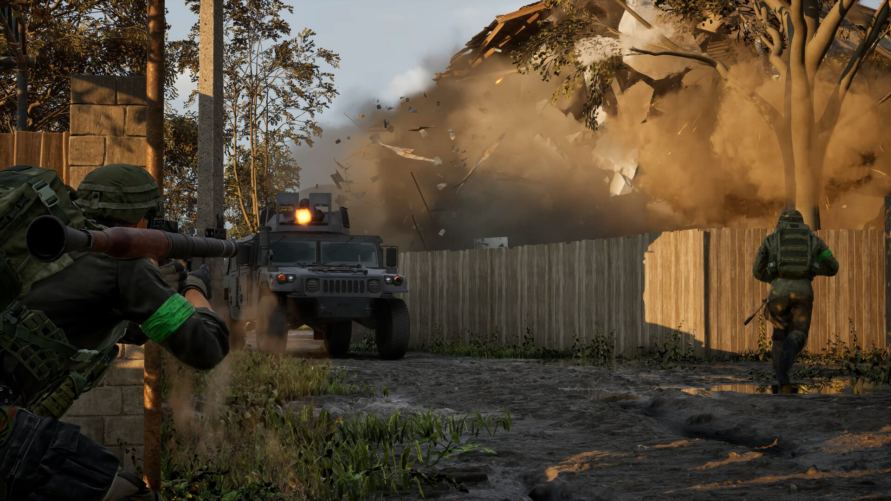
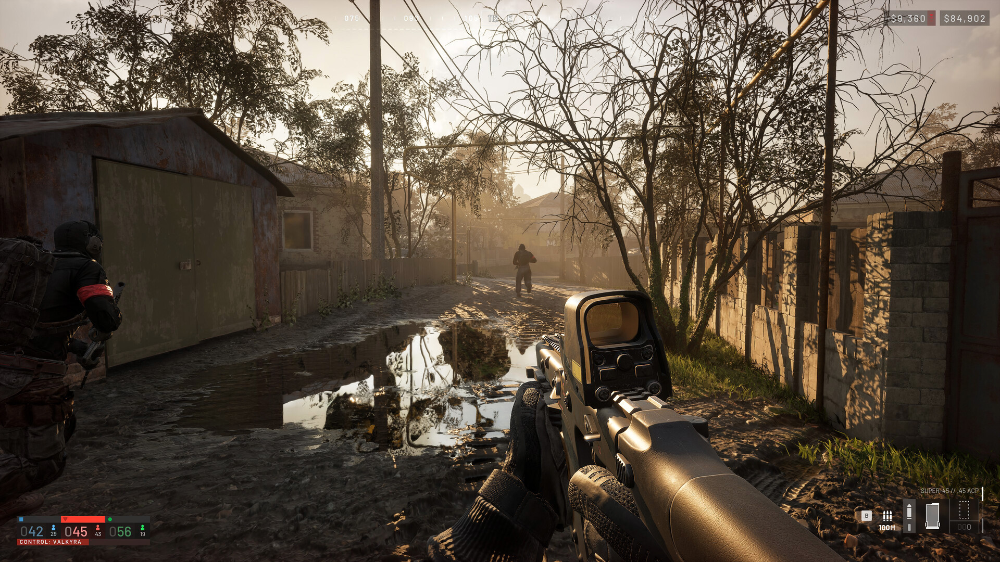

워독스 출시 동시접속34만 스팀평가 복합적인 이유
9월 11일(금), 대규모 밀리터리 전술 FPS '워독스(WARDOGS)'가 스팀 앞서 해보기로 문을 열었어요. 영국 개발사 벌크헤드(Bulkhead)가 만들고 Team17이 유통을 맡은 이 게임은, 최대 100명의 유저가 세 개 진영으로 나뉘어 동유럽 산업지대를 무대로 통제구역을 놓고 싸우는 구조인데요. 건물이며 지형이며 웬만한 건 다 부술 수 있는 '파괴 가능한 맵'이 특징이라 저도 출시 전부터 은근히 눈여겨보고 있던 작품이었거든요. 이 정도 규모로 진영전을 붙이는 밀리터리 전술 FPS 자체가 흔치 않아서, 장르 안에서도 꽤 독특한 포지션이라고 봤어요. 그런데 막상 문을 열고 나니 흥행 소식과 다소 엇갈리는 반응이 동시에 들려오는, 꽤 흥미로운 그림이 펼쳐지고 있더라고요.
워독스가 정확히 뭘 하는 게임인가요
워독스는 최대 100명이 3개 진영으로 갈라져 동유럽 산업지대의 통제구역을 두고 싸우는 대규모 밀리터리 전술 FPS예요. 단순히 총만 쏘는 구조가 아니라 진영별 전술 교전에 파괴·건설 요소까지 얹혀 있어서, 거점을 지키려고 세운 벽을 상대 진영이 통째로 부숴버리는 그림도 심심찮게 나온다고 하더라고요. 개발은 영국 스튜디오 벌크헤드가, 유통은 Team17이 맡고 있고요. 진영끼리 밀고 밀리며 통제구역을 뺏고 뺏기는 구조라, 한 판 안에서도 전선이 계속 움직이는 그림이 나온다고 해요. 대규모 인원이 한 맵에서 부딪히는 만큼 전선이 시시각각 바뀌는 재미가 있을 것 같아 저도 관심 있게 지켜보는 중이에요. 참고로 가격은 47,270원이고, 한국어는 인터페이스·자막까지 지원되지만 음성은 영어라는 점, 그리고 지금은 Windows에서만 즐길 수 있다는 점도 같이 알아두시면 좋을 것 같아요.

로켓런처를 겨누는 사이 뒤편 건물이 통째로 무너져 내려요 — 워독스의 파괴 가능한 맵을 잘 보여주는 장면이에요.
이미지 출처: 워독스 스팀 상점 페이지(공식 스크린샷) · 네이버 본문엔 받아서 재업로드 권장
출시일이 9월 10일인가요, 11일인가요
출시일 표기가 매체에 따라 하루 갈려요 — 인벤은 9월 11일 출시로 보도했고, 스팀 상점 페이지 자체엔 9월 10일로 찍혀 있거든요. 이 보도(2026-09-11 07:00)는 워독스가 이날 앞서 해보기로 문을 열었다고 전했는데, 정작 스팀 상점 페이지의 출시일 표기는 하루 앞선 9월 10일이에요. 미국 서부 시각 기준 표기라 하루 차이가 나는 걸로 보이긴 하는데, 이건 제가 확정해서 말씀드릴 수 있는 부분은 아니라서 두 출처를 그대로 병기해 둘게요. 국내에서 체감하시는 출시일은 이 보도 기준인 9월 11일로 보시면 무난할 것 같아요.
출시 직후 동시접속자 34만, 사실인가요
네, 인벤 보도에 따르면 워독스는 출시 직후 최고 동시접속자 34만 명을 기록했어요. 해당 매체가 2026년 9월 11일 오후 5시 50분에 전한 수치인데요, 저도 재확인을 시도했지만 실시간 수치까지는 확인하지 못했어요. 그래서 34만이라는 숫자는 이 보도 기준으로 받아들이시면 될 것 같아요. 그래도 앞서 해보기로 막 나온 신작치고는 꽤 화끈한 출발이었던 건 분명해 보이네요.
출시 직후 스팀 평가는 어떻게 갈렸나요
같은 날 그 보도 시점엔 추천 비율 62%로 '복합적(Mixed)'이었는데, 제가 직접 스팀 상점 페이지에서 확인한 시점엔 76%까지 올라 '대체로 긍정적(Mostly Positive)'으로 바뀌어 있었어요. 두 수치와 평가 구간은 아래 표로 정리했어요. 리뷰 수가 늘어날수록 등급이 다시 계산되는 구조라, 62%와 76%는 전혀 다른 게임 이야기가 아니라 앞서 해보기 초반에 흔한 재산정 폭 안의 숫자로 보시면 돼요.
| 확인 시점 | 추천 비율 | 평가 | 구간 | 리뷰 수 |
|---|---|---|---|---|
| 인벤 보도 (9/11 17:50) | 62% | 복합적(Mixed) | 40~69% | — |
| 이 글 작성 시점(2026.09.11~12 확인) 스팀 페이지 직접 확인 | 76% | 대체로 긍정적(Mostly Positive) | 70~79% | 17,637개 |
앞서 해보기 초반엔 리뷰가 짧은 시간에 몰려서 쌓이다 보니 평가 비율이 하루이틀 사이에도 출렁이는 편이거든요. 워독스도 딱 그 전형적인 케이스로 보이는데요. 정확한 수치가 궁금하시면 아래 워독스 스팀 페이지(앱 ID 1867240)에서 직접 확인해보시는 게 제일 확실해요 — 지금 보시는 수치와는 다를 수 있어요.
확인하신 시점의 실제 수치로 캡처해서 넣어주세요 — 시시각각 바뀌는 값이에요.
평가가 왜 복합적으로 나왔을까요
이 매체는 평가 하락의 원인을 게임성보다는 서버 문제로 인한 불만 쪽으로 분석해서 전했어요. 실제로 개발사가 출시 직후(9월 11일 새벽, 한국시간) 올린 핫픽스 공지를 보면, 서버 접속 자체가 안 되는 문제·플레이 중 갑자기 튕기는 문제·로그인 대기줄이 길어지는 문제까지 한꺼번에 겹쳤더라고요. 클라이언트 소규모 업데이트를 배포하고 통제된 단위로 인원을 조금씩 늘려 입장시키면서 밤새 상황을 지켜봤다고 하네요. 34만 명이 한꺼번에 몰렸으니 서버 입장에서도 부담이 꽤 컸을 것 같긴 하네요. 다만 개발사가 스팀 공지에서 앞서 해보기 기간엔 선택 구매인 서포터 에디션 말고는 별도 과금 요소를 두지 않겠다고 밝혔어요. 서버 불만이 나오는 상황에서 돈을 더 뜯어가는 구조는 아니라는 점은 첫인상을 판단하는 데 참고가 될 것 같아요.

안개 낀 진흙탕 골목에서 진영 간 통제구역을 놓고 신경전을 벌이는 장면이에요 — 전술 교전 자체는 흥미롭다는 반응이 많았는데, 서버 쪽이 발목을 잡은 모양새였죠.
이미지 출처: 워독스 스팀 상점 페이지(공식 스크린샷) · 네이버 본문엔 받아서 재업로드 권장
자주 묻는 질문
Q. 지금 앞서 해보기로 바로 사도 괜찮을까요?
가격은 47,270원인데, 대규모 진영전과 파괴 가능한 맵 자체를 좋아하신다면 지금 들어가셔도 충분히 즐기실 만한 단계예요. 다만 앞서 해보기 초반이라 패치가 잦고 평가 비율도 계속 출렁이는 시기니까, 서버 안정성이 더 궁금하시면 며칠 정도 지켜보고 들어가시는 것도 나쁘지 않은 선택이에요.
Q. '앞서 해보기'는 정식 출시랑 뭐가 다른가요?
앞서 해보기는 게임이 정식 출시 전에 개발이 마무리되지 않은 상태로 먼저 플레이해볼 수 있게 여는 방식이에요. 버그나 서버 불안정 같은 문제가 정식 출시보다 더 자주 나올 수 있는 시기라, 초반 평가가 시시각각 바뀌는 것도 이 시기의 자연스러운 특징 중 하나라고 보시면 될 것 같아요. 그래서 워독스처럼 막 문을 연 게임은 몇 주에서 몇 달까지도 패치가 잦은 편이니, 지금 상태만 보고 성급하게 판단하시기보다는 여유를 갖고 지켜보시는 것도 방법이에요.
워독스 정리
정리하면, 워독스는 9월 11일(인벤 기준) 앞서 해보기로 문을 열자마자 최고 동시접속자 34만 명을 찍을 만큼 화끈하게 출발했고, 스팀 평가는 62%(복합적)에서 76%(대체로 긍정적)까지 짧은 시간에 출렁이는 중이에요. 개발사가 9월 11일 오전(한국시간) 낸 공지를 보면 누적 판매량도 125만 장을 넘겼다고 하니, 동접 34만이라는 숫자에 걸맞은 흥행세인 셈이에요. 100명이 3개 진영으로 뒤엉켜 싸우면서 건물까지 부수고 짓는 컨셉 자체는 분명 매력적이니까, 서버 문제가 어떻게 정리돼 가는지 지켜보면서 들어가 보시는 것도 좋을 것 같습니다. 대규모 진영전 특유의 혼돈스러운 재미를 좋아하시는 분들이라면 한 번쯤 눈여겨볼 만한 신작이라고 생각해요.
워독스는 이번에 처음 다뤄보는 게임이라 아직 이어서 볼 만한 예전 글은 없어요. 앞으로 관련 소식이 더 나오면 여기서 이어드릴게요.
참고한 곳
· 워독스 스팀 상점 페이지(2026.09.11 기준)
· 벌크헤드 「PRE-ORDER NOW!」 스팀 공지(2026.08.11 · 앞서 해보기 과금 정책)